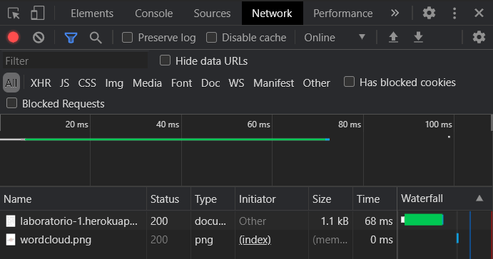

Utilizando um site para descobrir qual o ip do meu computador e primeira página, foi possível observar os seguintes mapas:
-
Mapa do computador pessoal:
-
Mapa da primeira página:


Usando o geotracerroute, é possível ver o caminho dos pacotes.
Com o mesmo site, mostra-se no globo como está disposto esse caminho.
-
Caminho:
-
Globo:


Ao realizar inspect na minha página, e em seguida navegar até a aba do Network, temos as seguintes informações:
São descarregados 2 ficheiros:
- O primeiro é do tipo document, tempo de espera de 68ms e tamnaho de 1.1kB.
- O segundo é do tipo png, tempo de espera de 0ms e tamanho 47.0kB, porém o tamanho vem da memória cache, diferente do primeiro ficheiro.
Primeiro ficheiro
Em preview, mostra uma pré-visualização da página, mas sem a imagem.
Em Headers, aparecem várias informações, como url requistada, status do código, tipo do conteúdo, entre outras informaões.
Em Timing, temos dados detalhados sobre o tempo, quando foi solicitado, o tempo de espera, também o TTFB, ou seja, o tempo até o primiero byte.
Segundo ficheiro
Em preview, mostra uma pré-visualização da imagem.
Em Headers, agora temos algumas informações diferentes do primeiro ficheiro como, o tamanho em bytes da imagem, e o ETag, que valida o condicional de cache.
Em Timing, temos menos dados que o primeiro ficheiro, apenas o tempo stalled e o conteúdo baixado.
Nesta última imagem temos os dados completos do rodapé do Inspect, de ambos arquivos: